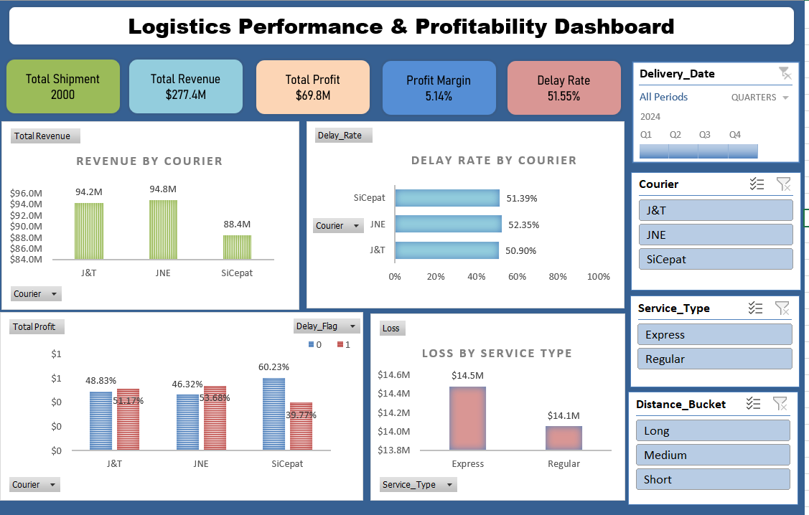

Data model
Three operational sheets (Shipments, Costs, Revenue) are joined into one shipment-level fact table, Fact_Shipment, with derived fields: Delivery_Days, Delay_Flag (delivery longer than SLA), Profit, Profit_Margin, and Cost_per_KG.

Findings by courier and service
| Courier | Service | Shipments | Margin | Delay rate | Loss-making |
|---|---|---|---|---|---|
| J&T | Express | 317 | 25.1% | 46.7% | 31.2% |
| J&T | Regular | 353 | 27.0% | 54.7% | 32.3% |
| JNE | Express | 342 | 23.4% | 51.2% | 37.4% |
| JNE | Regular | 340 | 28.2% | 53.5% | 30.9% |
| SiCepat | Express | 355 | 25.0% | 49.0% | 31.3% |
| SiCepat | Regular | 293 | 21.5% | 54.3% | 35.5% |
- Delays are systemic: every courier is between 50.9% and 52.3% delayed.
- SiCepat Regular has the weakest margin (21.5%).
- Delayed shipments earn less: 24.0% margin vs 26.3% on time, and take 5.6 vs 2.4 days.
- 1 in 3 shipments loses money: 662 shipments, Rp28.5M combined loss.
Recommendations
- Review SLA targets and warehouse pickup times before switching couriers.
- Flag loss-making shipments by route and service and set a minimum price per kg.
- Renegotiate SiCepat Regular.
Lessons from reviewing my own dashboard
Average of ratios ≠ ratio of totals. The original KPI card showed "Average of Profit_Margin" (5.1%). The real margin is SUM(Profit) / SUM(Revenue) = 25.2%, because a few big-loss shipments distort the average.
- Courier delay rates differ by less than 1.5 points, so check significance before acting.
- Bar chart axes should start at zero, and Rupiah values should be labelled Rp, not $.
Slides
The full case study as a slide deck. Open or download the PDF.